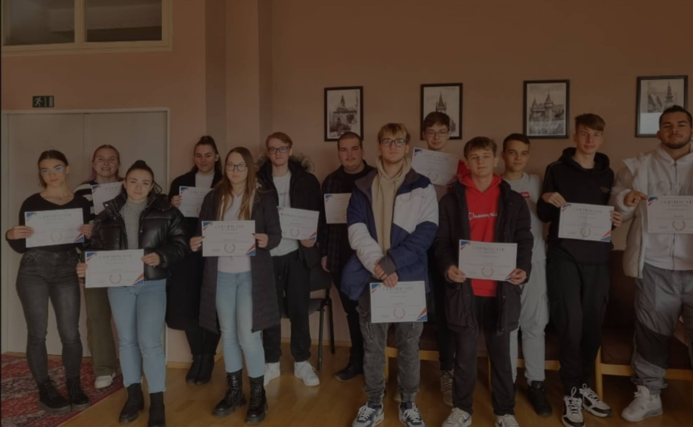

Közös Igazgatású Szakközépiskola
Szabó Gyula 21, Dunaszerdahely

Céljaink
Középiskolánk célja, hogy sokoldalú és jól felkészült egyénekké formálja diákjait, akik magabiztosan lépnek majd a jövő kihívásai elé.

Kirándulások
Iskolánk széles körű kirándulásokat szervez annak érdekében, hogy diákjaink számára gazdagító tapasztalatokat és élményeket nyújtsunk a kulturális és természeti látnivalók felfedezése révén.

Nyelvi sikerek
Iskolánkban nagy hangsúlyt fektetünk a nyelvtanulásra és sikeres eredmények elérésére a nyelvek terén, biztosítva diákjainknak a globális kommunikációhoz szükséges készségeket és lehetőségeket.